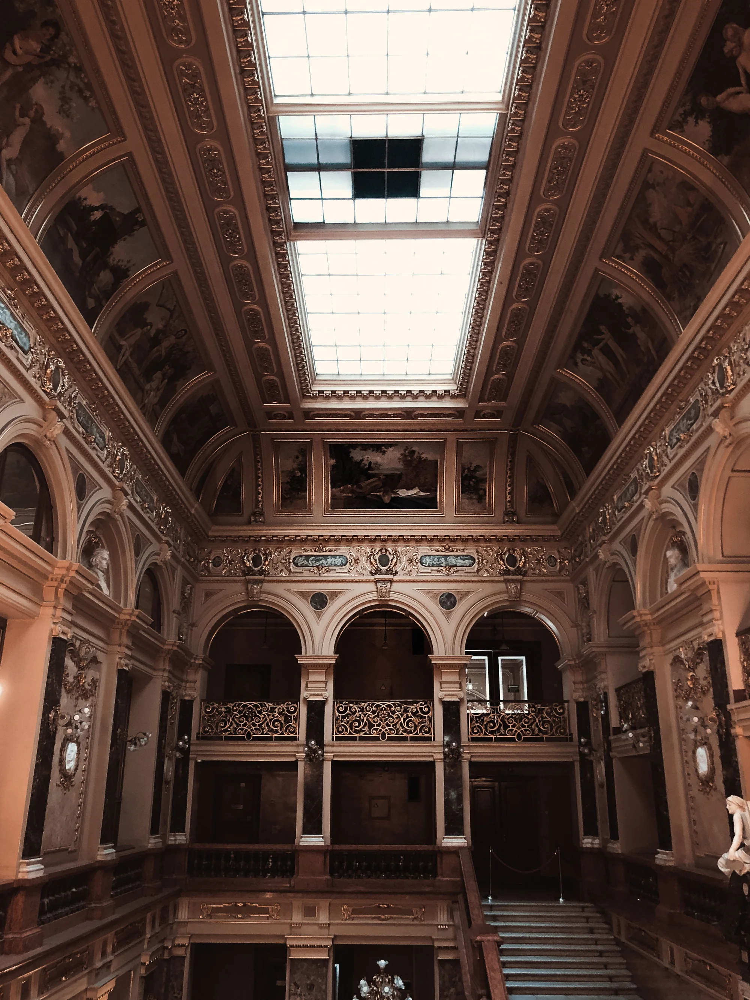
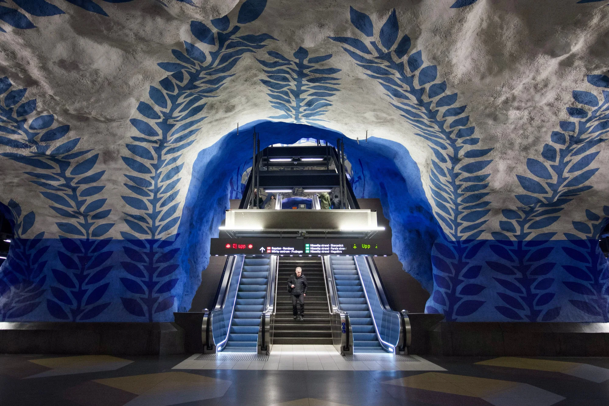
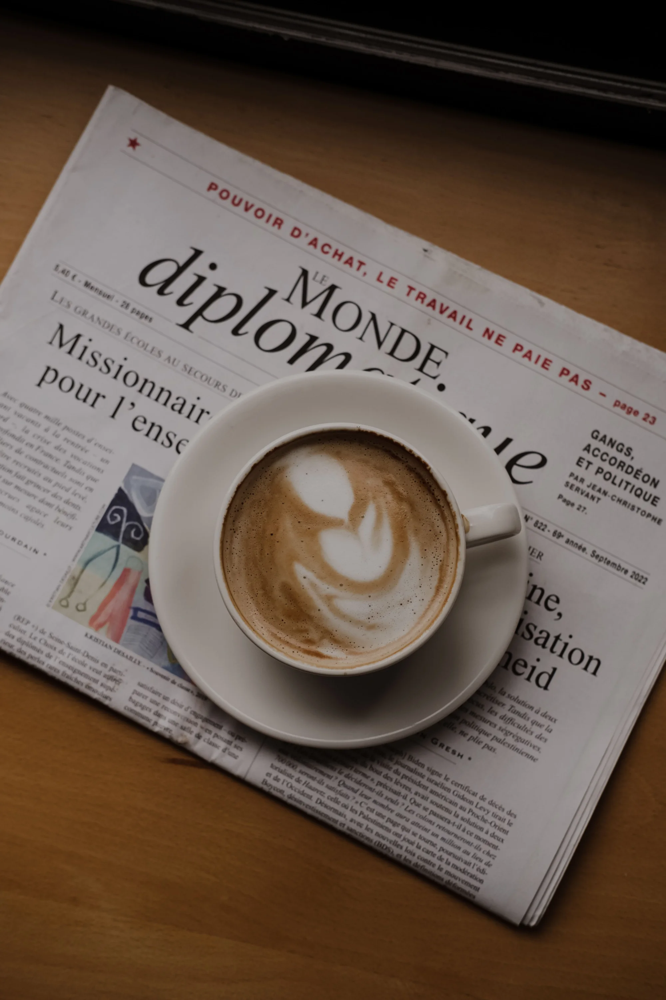
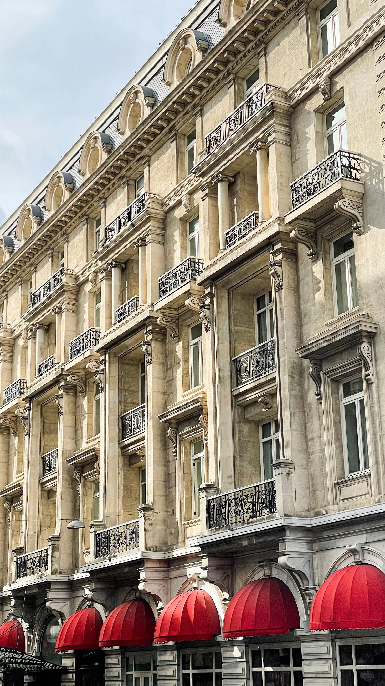
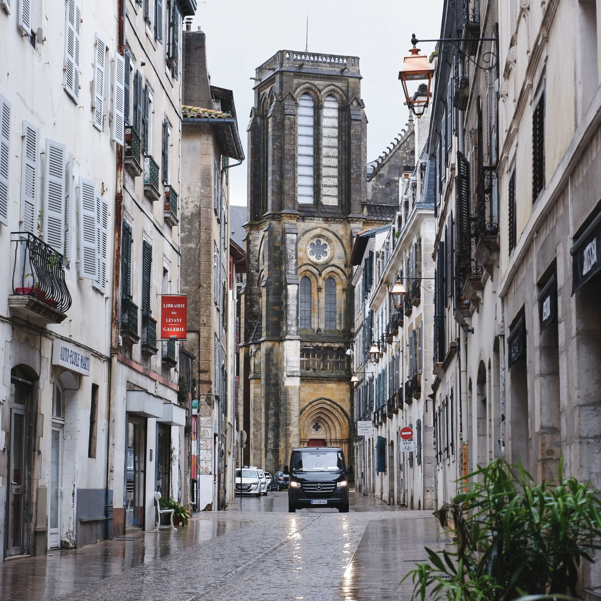
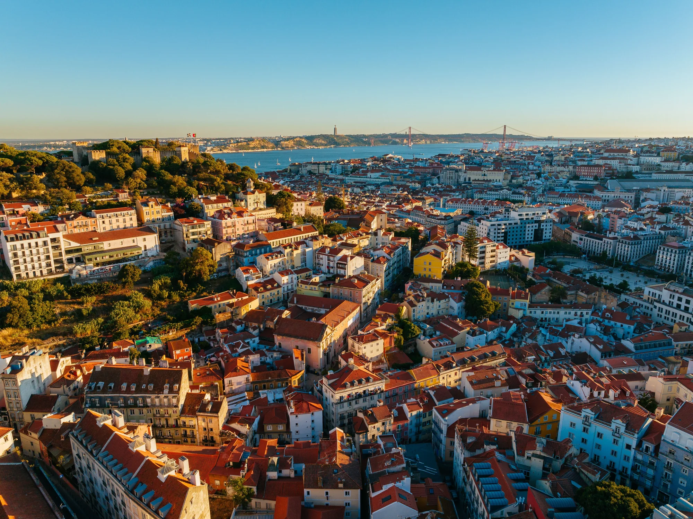
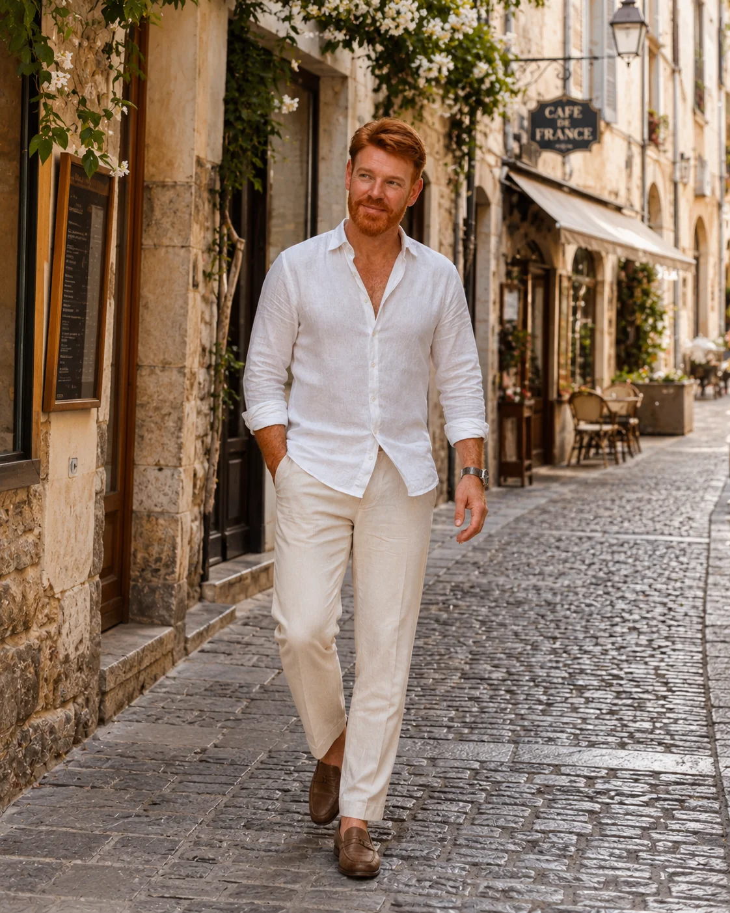

从博物馆开始
重要馆藏打开入口，而真正的深度来自地标、小型机构与观察时间之间的平衡。

在博物馆、街区、咖啡馆、建筑与日常生活之间，读懂一座城市。
从内部理解城市，而不是把文化旅行变成一场赶路。

重要馆藏打开入口，而真正的深度来自地标、小型机构与观察时间之间的平衡。

文化也发生在餐桌、报刊亭、书店，以及城市慢下来的地方。

立面、车站与街区，展现城市如何面对记忆、设计与未来。


博物馆之外，还有地铁、邻桌、书店、市场和普通街道。日常生活往往比任何景点清单更能解释一座城市。
每天集中在相邻区域。一个重要博物馆、一顿饭和自由时间，往往比六个分散景点更有价值。
三到四晚看到表面；五晚开始看见习惯、节奏与氛围变化。

最有趣的城市，从不会一次把自己全部交出来。
它藏在广场之间、建筑立面里、咖啡馆中、一次交谈里，也藏在临时决定走进去的街道上。
旅行目的地、旅游推广与内容合作。